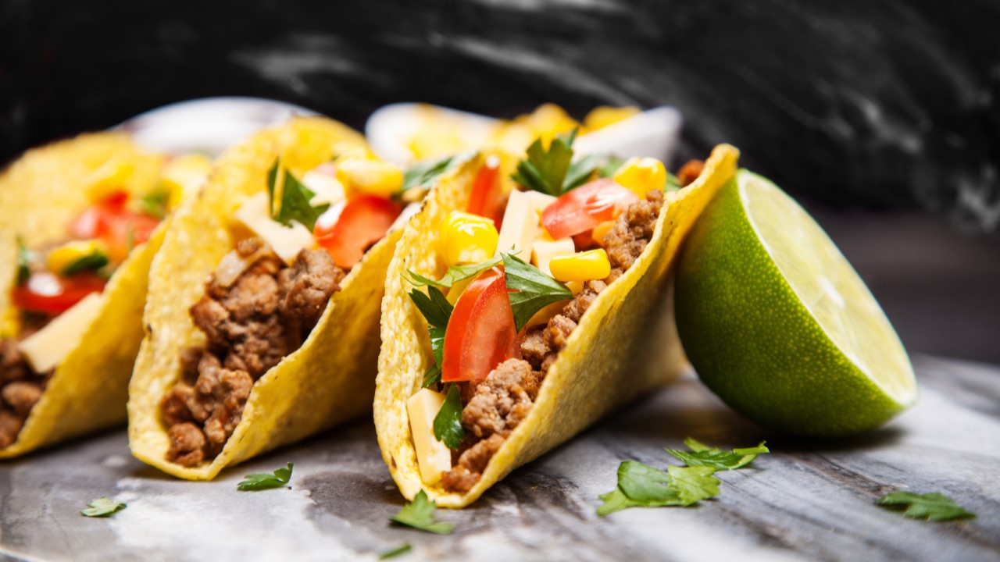

Tacos

Description
A taco is a traditional Mexican food consisting of a small hand-sized corn- or wheat-based tortilla topped with a filling. The tortilla is then folded around the filling and eaten by hand.
Ingredients
Tacos de carne
- 250 grs de carne: puede ser peceto, nalga, la que más te guste
- 1 cebolla morada mediana
- chile fresco (opcional)
- 2 dientes de ajo
- 1/2 pimiento o morrón rojo
- 1/2 pimiento o morrón verde
- Jugo de 1 lima o limón
- 1 tomate mediano
- Aceite neutro
- 1 cta de oregano seco
- Sal y pimienta negra recien molida
Steps
Como hacer tacos de carne
- Cortar los morrones y la cebolla en juliana, el ajo y el chile bien bien pequeño y el tomate en cubitos. Reservar por separado.
- Cortar la carne en tiritas y en un bol salpimentar, agregar la mitad del zumo de lima o limón y dejar macerando unos 20 minutos. Si quieren, en este paso pueden hacer la magia que les guste para darle sabor a la carne: ponerle mostaza, un chorro de cerveza… Lo que ustedes quieran. La idea es que los tacos de carne queden bien sabrosos así que todo vale.
- SEn una sartén poner un chorro de aceite, el chile seco y el orégano y calentar unos 2 o 3 minutos. Agregar el ajo y el chile y sofreír unos minutos más.
- Agregar la carne y saltear. Después de 5 minutos, a mitad de cocción, sumar el tomate y terminar de cocinar.
- Por otro lado, saltear el resto de las verduras hasta que estén cocidas pero OJO: que estén firmes.
- Mezclar las dos preparaciones y rectificamos con sal y pimienta de ser necesario. Le agregamos el resto del zumo de lima o limón y el cilantro deshojado.
Tacos de pollo
- 2 pechugas de pollo
- 4 dientes de ajo
- Zumo de 1 lima o limón
- Un poquito de perejil
- 1 cebolla de verdeo
- 1 cda de comino
- Chile seco, a gusto
- Aceite de oliva
- Sal y pimienta
Steps
Como hacer tacos de pollo
- Cortar la pechuga en tiritas y macerar por un ratito junto con el jugo de la lima, los ajos picaditos bien chiquitos, el chile seco y la sal y pimienta.
- Calentar la sartén y ponerle un chorrito de aceite de oliva junto al comino.
- Agregar el pollo y dorar. Sumar la cebolla de verdeo y ajustar los sabores. Cuando esté listo reservar!
Si quieren ponerle una cucharada de queso crema, o queso rallado o lo que sea, queda genial con esta receta de tacos de pollo.